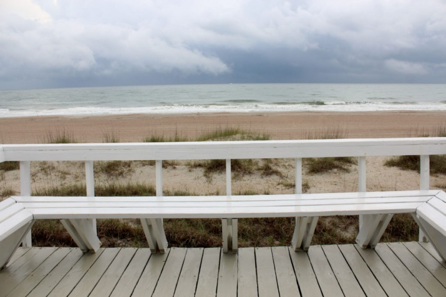
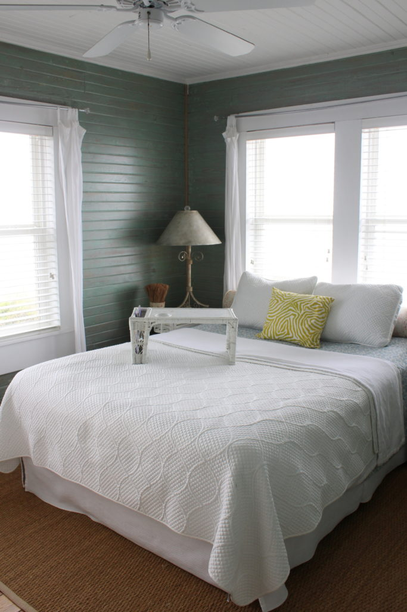
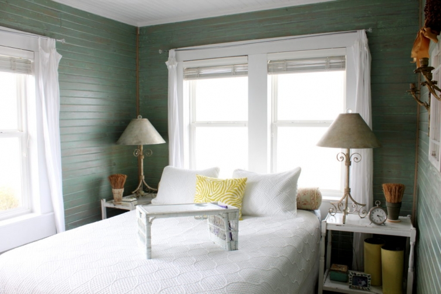

.png)
.PNG)
.PNG)
.PNG)
.PNG)
.PNG)
.JPG)
.JPG)
.PNG)
.PNG)


Happy Memorial Day Weekend, and welcome back for part 2 of the wonderful beach house we loved on our recent trip to the beach!  If you missed part 1, you can see it here.  In that post we toured the entry hall, the kitchen, dining room, living room, and sun porch.  Now we are ready to see the bedrooms.  Keep in mind this is a very old house, so the bedrooms are on the small side…but who needs a large one when you are just relaxing at the beach? 🙂
This is the master bedroom. (I took these photos on 2 different days hoping rain versus sunshine would make a difference.) Those double windows there look out directly on the water. Â What a joy to wake up and see the beautiful sunrise over the waves!
Opposite the bed is this large piece of furniture for clothing storage. Â It also houses a little television on the left side.
 There is a guest bedroom on the other side of the sun porch. It too has those lovely green stained walls, and again they mixed an old piece with new furniture to give it a more personal look.
There is a guest bedroom on the other side of the sun porch. It too has those lovely green stained walls, and again they mixed an old piece with new furniture to give it a more personal look.
Our daughter stayed in this bedroom with the cute cute headboards. 🙂  This room is just perfect for girls, don’t you think?
And I loved the arrangement of plates and ferns over the beds.
My husband thought I was crazy for saying that I loved the bathroom, but there is just something about a white painted room in an old house that is simply charming to me. Â And it really makes the old floors stand out when they contrast with all that white.
The built in cabinet with glass doors was perfect in there.
Loved the baskets of towels below the double sinks!
And yes, there is even the vintage claw foot tub in the bathroom. (And we had no problem with the shower curtain like we did when we stayed at Whitehall in Maine.)
Here’s another view of that gorgeous cabinet.
That finishes the tour of the interior of the beach cottage. Â So we are going right outside through the door of the sunroom. Â On the rainy days we saw this….
And on the beautiful sunny mornings we had this view. 🙂
(Another wonderful place to enjoy a cup of coffee.)
Go down the steps by the deck, and this little pathway leads you right to the water. Â (It is shared with the house next door because they were best friends with the owner when the house was built, and they wanted to live next door to each other.)
But we are not going down that path just yet. Â Nosirree. Â Take a turn, and go under the house.
It was such a happy surprise to find this space there!
Isn’t it great?! If we lived there, I know we would enjoy entertaining in that spot! Â There is also a sink, and a closet full of beach chairs, and a small outdoor shower under there. Â The owners have thought of literally everything.
You can have a seat right here. 🙂
Or if you prefer, walk on down to the beach. 🙂
I know many of you want the rental information. Â Just click here for the VRBO listing. Â Now don’t go expecting a modern Hilton if you happen to get lucky enough to stay there. Â It is an old beach house that has weathered many storms, and like any old house, it has its quirks…old floors that squeak (and a couple of tiny holes where you can see all the way through), old doors that aren’t square (and a crack that doesn’t seal all the way), and there is only 1 bathroom for the whole house. Â That was no issue to us at all, but if you want a private bath for every bedroom, that’s not happening with this house. Â I am sure there were regulations for historic homes and EPD regs that governed what the Krohns could and couldn’t do when they renovated the cottage.
But I would happily take the house – quirks and all!  I used to think Mary Kay Andrew’s beach house (Ebbtide) on Tybee was my favorite of all the beach houses in which we have stayed, but I think this one has surpassed it.  Both homes are gorgeously decorated (and the MKA one is huge!) but this one’s location – right on the water – has it beat.  (Ebbtide is behind another beachfront home.)  We will most definitely be staying here again when we can make another trip to Fernandina in the future.  Until then, I guess I will just have to watch the video. 😉
Enjoy the rest of this Memorial Day weekend.
I hope you are relaxing in a beach house somewhere as you read this.
(I’ll be working on researching and planning a Disney-at-Christmas trip!)
Until next time…


.PNG)
I loved this beach house! Such cute bedrooms and bathroom. The covered section underneath was great. When we go to the beach we have always rented a beach house so this would be right up my alley. 🙂 Whew, Disney at Christmas…good luck!! 😉 😀
Absolute deliciousness! That green shiplap sings to my heart. And the porch view to the ocean at the end is fabulous. I hope you had morning coffee, afternoon coffee and evening coffee looking at that view.
What a charming house and with that location, I would take it quirks and all too!
xo,
Karen
What a wonderfully peaceful looking place! I want to spend a month there! (I knew DiAnne would say this is her kind of beach house.) I like those built-ins, the chippy white bedside tables, the white linens, the wooden floors and most of all, that view! Thanks for sharing this charming house, Kelly.
Re “You’ve Got Mail”
Hi again! I just wanted to add a big “thank you” Kelly! Yesterday I linked through to one of your “you might enjoy these” posts, to the ones you’d written on the film “You’ve got Mail” I’d read them before when I read through all your posts but it was lovely to read them again and consequently I spent such a great evening curled up watching the film! I’d intended to for ages but thanks to you I actually did it 🙂 I’ve seen it many times before but always enjoy it so much and this time you helped me focus even more on the rooms, street scenes etc …and yes, I did cry at the end 🙂
Rosemary
Kelly,
Thank you for sharing this little slice of paradise. This is sooo my kind of beach House, creaky boards and all. Love the built ins.
What a fabulous place! I am still thinking about all those shells piled up on the mantle from the previous post.
DiAnne
How lovely Kelly How restful it must have been to stay in this beautiful home.
Thank you so much Kelly! I’m going to choose the walk on the beach and I come back in a few minuts for lunch! 😉 By the way, this ferns and plates arrangement makes me think of yours!
Thank again for sharing this beautiful house. It makes me dream about Summer vacation already.
I wish you a wonderful day,
Claire
Hi Kelly, such a beautiful cottage. The built in cabinet in the bathroom is just perfect depth for towels, etc.; a brilliant use of space. Isn’t the space beneath the cottage unique? it’s my kind of place, charming, quirky and memorable. Have fun researching your Christmas trip!
Love this little beach cottage, it definitely looks like my kind of place. Your blog always amazes me, taking me places I have been or places I want to go. Amelia Island holds a little piece of my heart. My nephew lives there and we have been there many times. So thanks for showing me a part I haven’t ever seen before.
A lovely way to enjoy a Sunday afternoon– looking at your wonderful #2 Beach House. Was wondering is it north or south of Elizabeth Pointe? I think my daughter and I will try to get up to EP for a few days in early August. We will definitely look for this cottage. Very warm here at the lake– lots of watercraft and fun happening all around. I’m “grilling” country ribs in my crockpot!! Cool bow tie macaroni salad, spicy baked beans, cole slaw, crusty fried squash and steamed sliced apples! Yum! Come on by and sit awhile on the screened upstairs porch and sip sweet iced tea! Happy holiday and looking forward to a nice summer season!!
Hi Kelly … I hope you’re having a good weekend too. Unfortunately no trips to the beach for us, but I have strolled along the riverbank. Imagine, sunny weather with a gentle breeze (perfect for walking!) and lots of boats , swans and ducks out on the water!
The bedrooms are lovely, in keeping with the rest of the house. I love white bed linens and then incorporating a little colour with cushions and throws, so I’d be happy here!
Rosemary
Not at the beach — BETTER! I’m in the comfort of my own home, taking an armchair tour of Fernandina, without the bother of sand and sun protection! Such a wonderful house you rented! Thank you for sharing that, and for the re-run of MKA’s Ebbtide house. With a little creativity and elbow grease, my 100+ year-old farmhouse could look like that. You’re inspiring me to clean out the stuff I’ve inherited from multiple generations and felt saddled by for a decade, and to just follow my own style. Life is too short to spend it stewarding dead people’s purchases out of a misplaced sense of responsibility! Uh oh, you may have started something here… 🙂
P.S. – Your graduation party was WONDERFUL! I’m amazed at how much you and your husband accomplished in such a short and event-packed time period! A beautiful and memorable occasion even for people who weren’t present!
I’m not exactly sitting at the beach…my backyard deck will have to do! Thanks for the tour though…enjoy your weekend! 😉
This is a perfect beach house…..I would prefer a pretty old cottage such as this or either of MKA’s ……. Bigger is not always better!
thanks for sharing! (PS>…my dream is to stay in the beach house you featured in Seaside…….the one that was owned by the antiques dealer from Houston! I LOVE that one too!